设想这样一种情形：孩子们非常喜欢参加学校的数学课程，渴望学习新颖的数学思想，并且可以熟练运用课堂上掌握的数学知识去应对实际生活中遇到的各种各样的问题。成年人对数学也颇有好感，愿意去处理工作中出现的数学问题，就算是那些对数学不那么“感冒”的人也会在聚会中克制自己说出类似“我厌恶数学”这样的话。在这个科技至上的年代，美国各行各业都充斥着熟练掌握数学与科学技术的重要人才。这样的画面看起来是不是很美好啊?但是现实情况却截然相反。
目前美国的数学教育严重滞后，对数学恐惧的人不在少数，学生们的数学成绩令人担忧。其实我们有希望将理想化为现实，家长们在其中起着至关重要的作用。在本章中，我将会介绍两种成功高效的教学方法，使学生们有机会接触真正的数学训练，以便提高自身能力。这两类方法适用于各年龄段学生的教学。在本章最后的部分，我们将会讲述一群背景各异的学生从对数学不感兴趣，到逐渐接受，再到喜爱，并最终把数学当成他们未来生活重要组成部分的故事。
Railside高中是加州的一所城镇学校，因为校址紧邻铁路，所以课堂教学难免会被途经火车的噪声干扰。就像很多城镇学校一样，该校校舍年久失修，但是它却有着独特的吸引力。众所周知，多数学校的微积分课程出勤率极低或者根本就不开设这门课程，但是Railside高中的学生却十分喜爱这门课程，并且掌握得很好。当我带领着教学观摩者们走进该学校的数学课堂时，学生们在课堂上的积极参与、努力学习、对数学充满热情的表现令他们感到震惊。
我第一次来到这所学校还是在1999年，当时是因为我听说这所学校的老师们正在一起商讨合作计划，要开展新式的教育模式，这引起了我极大的兴趣。作为“斯坦福大学教育研究计划”的成员之一，我受邀来到这所学校，研究采用不同的教学方法对学生们学习产生的影响。在这项研究计划开展的4年时间里，从我们跟进调研的3所高中的700多名学生的学习情况来看——其中涉及了课堂观摩旁听、访谈记录、评估测试等多个研究环节——最后我们发现，Railside高中的教学方法是最为成功且有效的。
Railside高中的数学老师们曾经采用过传统的教学方法，但是由于极高的不及格率使学生们逐渐失去了学习兴趣，老师们不得不考虑设计新的教学方法。在历时几个暑期的反复讨论后，老师们构思出了一种全新的代数课教学模式，并且逐渐地应用到其他课程的改革当中。同时也对年级的课程表进行了调整，让代数课成为所有学生进入高中后的第一门课程。这一改革不仅仅是针对那些学习起点较高的学生设计的，它面向全部的学生。
对于我们常见的代数课来讲，一般的上课模式就是学生们反复地做练习题来巩固学到的知识，比如因式分解（多项式分解）和解不等式。在Railside高中，学生们需要掌握的数学方法是相同的，但是对课程的设置却围绕着更为宽泛的数学思想，依据不同的教学主题模式。比如对于“什么是线性函数”这一问题，Railside高中将教学重点放在了“函数多元化的表达方式”上面，而这恰巧与我提出的“数学不只是一种解题思路”的理念不谋而合：学生们会发现数学这门学科可以用语言、图形、表格、符号、实物、图像等多种表达手段来描述。随着教学的逐步深入，学生们在课堂上经常被要求使用不同的表达方式和表现形式，将自己对某一数学知识的理解从不同的侧面展示给大家。
当我们采访学生，询问他们如何来定义数学这门学科时，他们并没有像此前其他学生那样把数学总结成“一系列条条框框的法则”。相对地，他们给予我们的回答是：数学可以作为一种交流工具，是一门语言形式。正如其中一位学生所说：“数学其实就是一门语言，因为它有着一套完备的表达各种思想的体系。我认为这就是为了实现交流而建立起来的，当你知道如何着手去解答一道数学题目时，也就意味着你又额外掌握了一种与伙伴们交流的方法。”
我记得在我旁听的一堂数学课上，学生们正在学习函数这一章。老师讲解一种名为“堆叠形式”的算法，每位学生都要学习不同的堆叠形式。Pedro学习的是下图中的一种表现形式，这种形式的前3项表示如下：
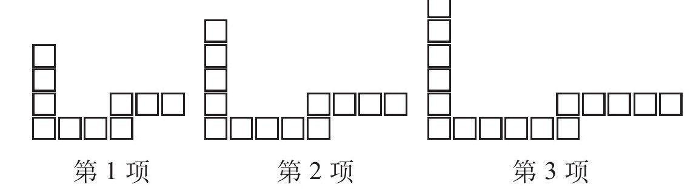
这项教学活动的目的在于让学生们理解函数表达式是怎样一步步构思形成的（当然你如果感兴趣的话也可以来试一试），这种图形变化可以用一项代数法则、一张t型表格、一幅图例、一种属性形式来表达。学生们同时还要依据前3项的变化模式来推断出后面多项的表达形式，并最终做出一般化的总结。
Pedro从前3幅图的变化形式上来寻找规律，将图中方格个数列入自己设计的t形表格中：
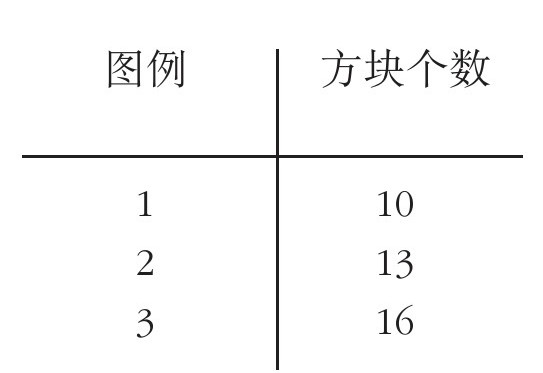
很快他就发现在图中后一项会比前一项多出3个方格。下一步他打算把图形变化的具体规律找出来，几分钟过后他终于发现了！他认为每一幅图中的方格都可以看作3个部分的组合，每个部分变化一次都会增加一个方格，他随即用下面的图形来表达自己的想法：
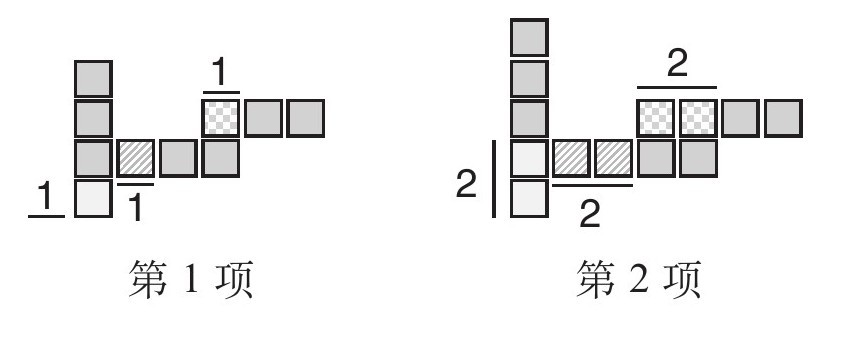
在Pedro看来，每一幅图中始终有7个方格保持数量及位置不变（当然这只是他个人对于这几幅图变化形式的理解，还有其他的推导方式）。除此之外，其余各行各列的方格都会依据各自的变化规律依次递增，比如我们以纵向方格的排列为例来加以说明：
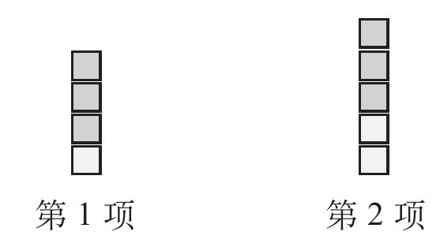
我们看到在第1项中，在纵向3个方格保持不变的情况下，底部还有1个方格，我们可以将这种形式表示为“1+3”。同理可得第2项表示为“2+3”，以此类推，第3项表示为“3+3”……随着项数（指具体第几幅图）的递增，每一次均在这3个方格底部再增加1个方格。我们同时还发现，每次方格递增的数量与项数递增的数量恰好相等。当项数是1时，纵向方格的总数是“1+3”；当项数是2时，方格总数是“2+3”；按照这个规律我们可以猜想，当项数等于100时，方格总数应该是“100+3”。以上的过程结合了判定、观察以及描述这几项数学技巧，它们都是解决数学问题的核心技能。
Pedro将他所理解的图形变化规律转化为代数表达式，可以做出如下表述：
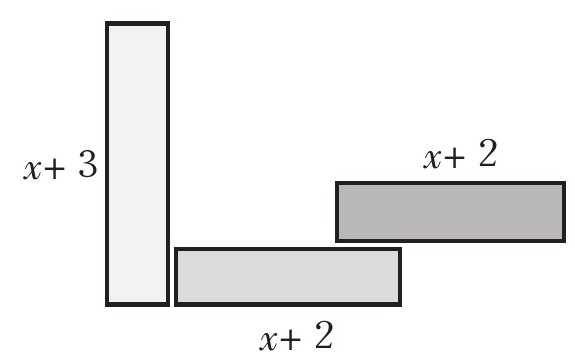
图中的x代表项数，表达式由3个部分组成，将其汇总并整理得到：3x+7。
这里我们需要向那些看到该题目并感到迷惑的读者解释一下“代数”的定义。当我的一个朋友读到这段内容时，她不禁感到有些迷惑，因为她以前接受过的传统数学教育不是这样学习代数课程的。她在看完例题中的图形，发现学生写的代数表达式为3x+7后，问道：“这里的x表示什么？”我告诉她x表示项数，即第1幅图的项数x=1，第2幅图的项数x=2……以此类推。
而她对此表示完全不能理解，我想这可能和她之前所接受过的传统数学教育根深蒂固有关，在她的潜意识中总会认为x只代表某个数字。她以前在数学课堂上可没少练习如何求解未知变量x，比如通过“等式转换、移项变号”得到x的值。
其实不只是她，数百万的学生都对代数中符号x的定义产生错误的理解，事实是x不只代表某个数字，实质上它是一种变量。代数这门学科之所以被医学工作者、计算机程序员等各领域专业人士广泛应用，是因为代数对问题有良好的描述性与表达性。
这道题中，随着项数的递增，图形中方格数量也会相应增加，但是其核心不仅仅是考察如何用代数来表示方格数量的变化。这堂课的核心任务是引导学生们学会用一种形象化、代表性的方式，来描述图形中方格数量的变化，这恰恰是代数学在现实中应用的基本核心。其实许多人在学习代数时并没有掌握代数学最深层、最本质的核心思想，这就直接影响到了他们对代数学掌握的熟练程度，同时也意味着这些人缺少相关能力训练，很难体会到代数学在数学和其他学科领域作为量化工具的重要性。
Pedro对自己的工作成果感到十分开心，他决定用t形表格来检查自己的代数表达式是否正确。在验证表达式3x+7的合理性后，他决定将项数与方格数量间的关系描点作图。看着他高兴地去找图纸和彩笔的那一幕，我十分欣慰地离开了他所在的学习小组。第二天我和Pedro又一起验证了他前一天所得到的结果，当时他与其他3个男孩坐在一起，正在讨论设计画报来展示他们得出的函数表达式。他们将4张课桌拼在一起，把桌子上面的大幅海报划分为4个区域。如果从远处看，这张海报很像是画满各式图表而且色彩丰富的艺术作品，上面是由不同方向的箭头连接而成的各种数学表达式和夸张的数学符号。
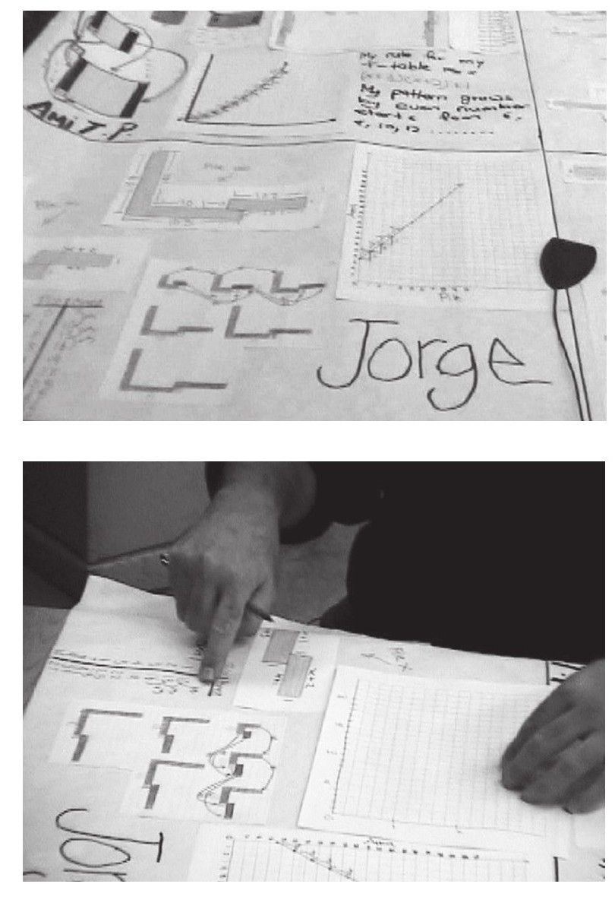
过了一阵子老师走了过来，看了看孩子们的工作成果，与他们讨论海报上面的表格、图画和代数表达式，以确定他们是否真正理解了代数表达式的内在逻辑关系。老师问Pedro代数表达式中的“7”（取自于代数表达式3x+7）如何体现。Pedro随即向老师解释了自己的想法，以相同的颜色将位置不变的7个方格标记出来。这种用不同颜色表示函数表达式各部分关键特征的手法，正是Railside高中教给学生们的一种方法。这种方法让学生们明白了一个道理：任何一种代数表达式都有可能以一种直观可视化的方式加以呈现，并且表达式中各项参数间的关系都可以通过表格、图形等方式表达出来。
而坐在桌子另一旁的男孩Juan也给出了自己的答案，这种变化形式更为复杂，涉及非线性数学方面的知识。用标有颜色的方格表示图中变化的部分，具体如图：
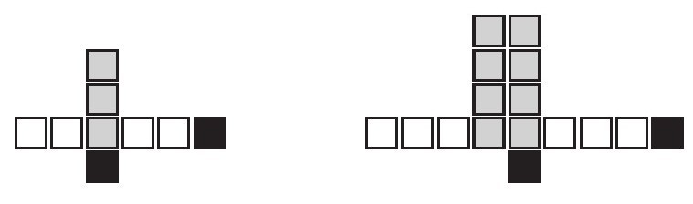
试着想一想上图中所表现的是怎样的变化规律，又应该用怎样的代数形式表达出来。
无论最终计算结果是线性形式还是非线性形式，在这个由4人组成的学习小组中，每位同学都可以将自己得到的结果同另外3人的结果相互比较，他们可以通过画图等形式找出彼此的结果之间是否等价或是存在着内在联系。图形中的方格变化模式是非线性的，这对于九年级的学生来讲或许会略显复杂，不过这更加激发学生们的讨论热情和学习劲头，从而使他们在学习的过程中不断收获惊喜！其实这堂课的教学目标就是让学生们去寻找图形变化的各种表达模式并将其进行归纳总结。
Railside高中如此设置课程的目的，就是把看似毫不相关的代数和几何在学科间建立起联系，以便满足美国高中学习大纲提出的相关要求。不仅如此，学生们在课堂上有充分自由的空间，运用自己的思路发挥想象，而且利用各式各样的数学表示法来展示他们的思考结果，这也在无形中向学生传递了代数学和几何学的内在关联性。
在Railside高中的数学课堂上，所有的课堂教学均以小组学习的形式来展开，学生们在学习过程中可以互帮互助。老师们将主要精力都放在了提高小组的学习效率上面，并且教育学生们，不论自己学习有多优秀或者排名有多靠前，都要尊重其他人的劳动成果。我旁听过的传统数学教育的课堂上，学生们在谈论中下意识地为他人贴上“聪明或迟钝”、反应“迅速或缓慢”这样的标签。但是Railside高中的学生们可从来不会这样。当然这并不意味着他们都处于同一水平线上，但他们会逐渐意识到思维的多样性，以及在参与解题的过程中每个人都做出了自己的贡献。正如Zane对我所说的那样：“这里每位同学的学习水平各不相同，但正是因为这种不同才能够促成我们相互帮助、共同成长，从而使我们这个集体变得更加优秀。”
Railside高中的老师所采用的是一种被称为“复合教学”的方法，这种方法有助于小组式集体学习更加有效率，并营造出一个公平的教学氛围。这种教学方法强调每一位同学都是“才华横溢”的，能够在自己擅长的领域内有所建树。
作为本次调研的一部分，我们进行了一次对照试验：将其他两所学校的学生与Railside高中的学生做比照研究。他们之间的区别就在于另外两所学校采用的是传统的数学教育模式。他们并不会以小组方式来讨论数学，也不会去用多种多样的方法表示代数关系，更不会去将各类数学工具应用于实际问题。但他们比Railside高中要更加现代化和城市化，而且学生们的整体素质也更高。在研究开展一年以后，三所学校的代数成绩基本处于同一水平；两年以后，Railside高中的学生成绩已经全面超过了其他学校。
除了在考试成绩方面表现优异外，Railside高中的学生还同时表现出了对于数学学习的热爱。四年内我们不定期地从各所学校抽取学生学习状况调查样本，研究结果表明：在数学学习方面，Railside高中的学生要比其他的学生表现得更加积极，更有兴趣。在学生们升入高年级时，Railside高中大约有41%的学生参加了微积分预科班或微积分课程的学习，而在其他学校，这一比例仅有23%。在我们调研接近尾声的时候，我们采访了105位高年级学生对于未来的打算，几乎所有从传统数学教学课堂走出来的学生都纷纷表示不再打算继续学习有关数学方面的课程，即使有些人在数学方面取得了不错的成绩。仅有5%的学生愿意在将来继续学习数学，相比之下Railside高中的这一比例有39%。
Railside高中的学生之所以数学成绩优秀是由多种因素造成的。他们有机会去研究那些十分有趣的数学题，并且在这一过程中主动思考（而不是简简单单地学习所谓的“套路”），在课堂上他们可以和自己的同学互相讨论，这样的教学形式激发了他们的学习兴趣和乐趣。其实还有更重要的一方面，这是在其他学校都无法实现的：借助小组讨论的方式，老师在无形中向学生传播了“什么是数学以及什么是智慧”的理念。Railside高中的老师清楚地知道，要想把数学学好，除了要会正确运用各种运算法则外，还需要具备提出问题的能力、制图制表的能力、重述问题的能力、选取方法的能力，以及阐述观点的能力。老师通过鼓励学生尝试不同的解题方法，比如提出一个好问题，换一个角度重述问题，讲解自己的思路、逻辑分析、方法论证、观点表达及对问题的独到见解，来引导正确的数学学习方向。简单地说，由于Railside高中有着许多可以把数学学好的方法，因此也就会有更多的学生有机会去获得成功。
该校新生Jasmine在谈到种类繁多的教学方法时说道：“借用数学这个渠道，你可以获得与他人交流的机会，与大家共同探讨，并且回答同学们提出的问题。当然你不能用‘来看看教材，咱们根据教材上的提示来计算’这样的方式与他人交流。”我们问Jasmine为什么学习数学会带给她如此多的收获，她回答道：“解答数学题并非只有一种方法可以选择……通常我们会有很多种途径，答案或许也可能不止一个，你可以通过很多种方式去求索，并可以进一步去追问‘为什么可以这样做’。”
这种通过不同路径求解数学问题的教学模式得到了学生们的一致好评，同时学生们也在此期间提高了数学论证与推理的能力。Railside高中的学生都承认，在数学课上，具备相互帮助、解释辨析、论证解答这几项能力对于数学进步来讲非常有价值，而且至关重要。
除此之外，Railside高中的老师还十分小心地淡化了学生学习程度的差别，并且试图让每一位学生都相信他们都是非常“聪明的”。因为很多学生甚至是成年人，出于对自己不够聪明的心理暗示，在面对和数学有关的工作时，处理起来没有那么得心应手。因此老师们鼓励每位学生建立起自信。很显然老师们所做的这一切都见效了。我敢说任何一位旁听过这所学校数学课的人，都会被学生们在课堂上表现出的积极主动和热情震撼，这是因为他们有着强烈的自信心，而且他们十分确信自己会在数学学习中取得成功。
我首次以纵向教育的方式对数学教育教学展开研究时，从两所学校分别选取了同一届的学生开展研究，从他们13岁开始一直追踪到16岁。其中的一所学校就是Phoenix Park学校，这所学校采用的是基于课题式的数学教育模式；而另一所学校是Amber Hill学校，这所学校采用的是传统典型的数学教育方法。这两所学校的学生总数基本相近，老师水平基本相当，并且在我开展此次研究时，这两批学生接受的数学教育模式基本一致。在我研究的起步阶段，这两批学生在全国数学统考时的成绩基本上处于同一水平，但是在这之后他们的数学学习模式就发生了截然不同的改变。
那天我走进了坐落于英格兰技术工人聚集区的Phoenix Park学校，在开启本次课程旁听计划的第一天早晨，我怀着忐忑的心情穿过学校的操场，走进了教学楼。很快我就发现一群学生围在教室门口好像在讨论着什么，我不由得上前询问他们数学课的大体情况。学生们的回答“千奇百怪”，有的用“混乱”来形容课堂气氛，有的用“自由”来形容。他们的这些形容词更加激起了我的好奇心，使我对即将开始的数学课程充满期待。
Phoenix Park学校的数学课堂并没有想象中的那样混乱。基于课题式的教学方法减少了对学生在课堂上的硬性要求和控制，代替了传统教育中“老师讲，学生做”的固有模式。老师们通过采用布置实际课题的方式，让学生们在解决实际问题的过程中去学习数学，这些实际课题通常包含了在阶段性学业期间学生们需要掌握的知识和方法。学生们从八年级开始（也就是从学生们入校的时间算起）直至3个学年后为止，每一堂数学课都是以这种开放式的课题模式来进行。英式教育一般不会把数学这门学科拆分成代数或几何等几个数学分支来分别授课，而是将数学作为一门整体性的综合学科让学生们去学习。在这种课题式教学模式下，学生们以小组为单位进行混合式教学，每一种项目课题一般需要3周的教学时间来完成。
在每一次开启不同的课题教学前，老师都会向学生们引入一个实际问题或背景主题，以便为学生们在接下来的探索铺平道路。学生们则可以发挥自己的想象和运用已掌握的数学方法来引领自己。通常课题中的问题都比较开放，以便学生们根据自身的学习兴趣制定个性化的学习方案。比如“某物体的体积是216立方米”，学生们需要基于该条件去思考有关物体的各种特征，比如说这个物体的维度是多少、外形是什么样子的……有时在学生们着手开始新的课题前，老师会提前告诉学生们一些必要的数学知识，以便在之后的探索学习中使用。更具典型意义的是，当个别学生或学习小组在课题项目进行到某一特殊阶段而需要额外帮助时，老师会根据他们实际工作的进展情况为其讲解对应的数学知识。
在一次数学课上，学生们正在开展一项名为“36道围栏”的课题项目。老师让所有学生都围在教室黑板前面，教室内的桌椅随意地摆放着，学生们在前面围成了一个拱形。Jim老师描述了一下案例：一位农场主有36道可拆卸的围栏，每道围栏都有1米宽，他打算用这些围栏圈出一片面积最大的地盘。老师随即问学生们应该围成怎样的一个图形才能使圈地面积最大。学生们纷纷提出了自己的想法：有说围成长方形的，有说围成三角形的，还有说围成正方形的。Jim老师根据同学们的回答接着提问道：“那么大家觉得五角星形怎么样呢？”学生们随即又开始了思考和讨论，Jim老师接着问他们是否考虑过不规则图形。
在经过了一阵讨论后，Jim老师让学生们回到自己的座位上去构思解题方法。Phoenix Park学校给予学生们足够的空间去选择学习方式：比如可以独立思考，也可以采取两人一组或者多人一组的方式。其中一些学生开始着手研究各种大小的长方形和正方形；另外一些学生则采用在直角坐标系作图的办法，来研究在各类图形中周长与面积的变化关系。就在此时，Susan正独自研究着六边形，她随后向我解释说发现了正六边形的特点：可以分解成6个大小相等的三角形，边说边在纸上画出了一个正三角形。她十分肯定地说正三角形的每个顶角都是60°，因此她可以用尺子和圆规来画出这个正三角形，并根据三角形的高度来求得面积。
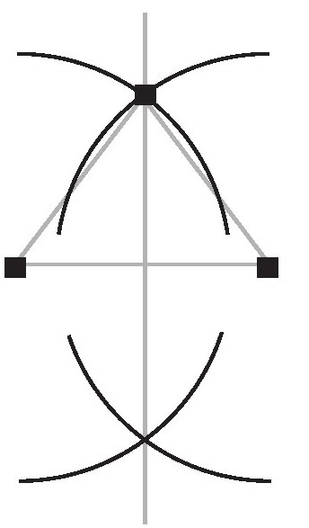
就在Susan研究的时候，我又来到了一群围坐在桌子旁的男孩中间。在这群男孩中，Mickey发现了周长为36米的长方形可以围成的最大面积是9×9。这一发现让他有了些许启发，那就是由等边图形所围成的面积会更大一些，他随即转换思路考虑用等边三角形来作图。Mickey看起来乐在其中，正当他准备向大家展示自己的三角形制图时却被Ahmed打断了，因为Ahmed发现了三十六边形的面积最大，所以他建议Mickey放弃画三角形的计划。Ahmed同时也建议Mickey尝试画一画三十六边形，Ahmed兴奋地斜靠在桌子上，饶有兴致地讲解着如何作图。他解释道：“三十六边形可以分成36个小三角形，每个小三角形的底边边长为1米。”Mickey听完后随即表示赞同，并且说道：“没错，而且每个小三角形的顶角是10°！”Ahmed接着说道：“对，但问题是需要求出每个小三角形的高度，为了得到这一高度，就需要在计算器上使用正切值（tan）按钮。让我来告诉你如何操作，Collins刚刚教会我怎样计算。”
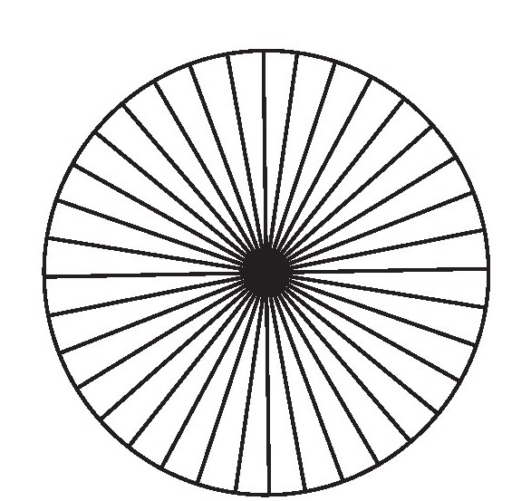
随即Mickey和Ahmed坐在一起，用刚刚学到的正切值来计算三角形面积。
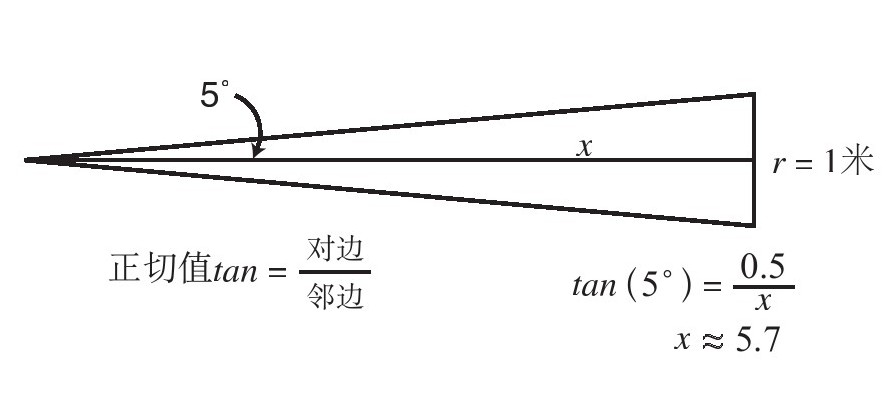
随着课堂上对于“36道围栏”课题的讨论接近白热化，有许多学生纷纷将自己设计出的图形分解成小三角形。这也就为老师讲解三角函数及相关知识创造了客观条件。同时学生们也会积极听讲，因为他们可以马上运用这些刚学到手的知识对课题去进一步探索研究。
在Phoenix Park学校，老师们讲解数学方法是为了帮助学生们解决实际生活中的问题。当然学生们也可以在课题教学开展的过程中，接触到一些统计学和概率学等相关方面的知识。学生们曾参加过一项命名为“认识世界”的课题活动。在该项教学活动中，学生们对感兴趣的话题进行了有关的数据分析，比如高校课堂的出勤率、国内女性的怀孕率、足球联赛的比分结果等。学生在探究形式各异的数学表达方式的过程中渐渐地掌握了代数学的本质特征。
其实老师们在选择课题时十分谨慎小心，一方面这些课题应该足以引起学生们的学习兴趣，另一方面学生们能够通过对这些课题的研究学习掌握重要的数学思想和方法。其中有许多的研究课题都是基于实际问题演变而来的，而另外一些课题比如“36道围栏”，就是对于典型实际问题抽象化的延伸。随着学生们的课题自主探索，他们会在这个过程中学习到各种不同的数学方法，通过与已掌握方法的比较，锻炼了他们针对课题选择和应用最恰当解决方案的能力。因此当Phoenix Park学校的学生提出“数学方法是解决应用问题的实际工具”这样的想法时，我们就不会感到奇怪了。
我曾采访过已经入学两年的Lindsey，她这样来阐述对于数学方法的认识：“嗯，当你学到一条新定理或者新方法时，你会迫不及待地想在实际中应用。我们以小组合作的方式挖掘新方法，同时我们也会估计是否存在其他更优的方案，并会做出不断调整。虽然前进的‘道路’非常曲折，但我们依然勇往直前，根据课题所面临的新情况去不断调整我们的方案。”
在这样的教学模式下，学生们可以按照自己的意愿选择不同的学习方式。他们可以多人一组、两人一组或者独立研究。他们可以根据自己的实际学习情况选择相应的研究课题，并结合自身的能力水平寻找切入点来开展研究。有许多学生都表示很喜欢这种自由的数学学习方式，Simon就告诉我：“你可以去自主地探索数学问题，在课堂上没有任何限制，这样的学习方式真是非常有趣。”可以说Phoenix Park学校的这种教育模式非常有“弹性”，学生们在课题研究中被赋予了充分的自由选择权。
在Amber Hill学校，老师们采用的是在美国和英国都十分常见的传统式数学教育。比如说，学生们在学习三角函数时，并不会通过引入实际问题去学习知识。相对地，他们只是被要求机械性地记忆这些内容：
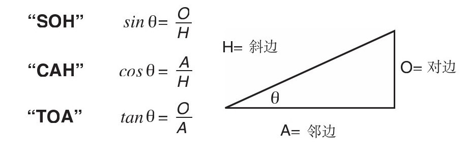
学生们的练习题一般很简短。Amber Hill学校采用的是以简单实际背景为基础的传统数学练习题，比如：
在这所学校几乎所有的数学课堂上，都出奇地安静平和，每位学生“肩负”着学习任务默默地记着笔记。学生们两人同桌并允许小声地交流，当然这种交流仅限于对一对练习题的答案，而不是那种真正课堂上的讨论。在我开展调研的3年时间里，我发现多数学生学习都非常认真，但是他们中的许多人都对数学表示了厌恶的情绪，认为数学只是一门需要去记忆的学科。像Stephen告诉我的：“在数学世界中，我们想要由a得出b，这只能通过某一特定的运算公式而不存在其他的运算方法。或许也没准儿存在，但这也就意味着你又需要记忆新公式了。”高年级学生Lonise就告诉我：“对于数学，你需要做的就只是记忆，而对于其他学科，你通常还需要思考其内涵。”
Amber Hill与Phoenix Park的教学模式形成了强烈的反差。Amber Hill学校的学生们把更多的时间放在了完成大纲所规定的教学任务上面，他们普遍认为数学只不过是一堆需要死记硬背的定理法则，只有少部分的学生培养出了对数学的学习兴趣。在课堂上，Amber Hill学校的学生们可以说是很成功的，因为他们能够将练习题解答得非常出色，但是仅限于把答案做对而已，并非真正地根据题目中所给出的各种线索条件去解题，也就是说学生们并非真正地理解了数学思想。
比如说，在题目中最为明显的提示就是告诉学生们用某个章节讲解过的数学知识来解答，而学生们根据这条提示往往很快就可以得出正确答案。学生们同样清楚地知道从练习A过度到练习B时，题目的难度会有所上升。当然在题目中还会出现一些其他形式的提示。比如：所有条件在图表中已经给出或是所有参数已经在问题中标明等。这就会引发出一个现象，那就是如果学生们不把题目中的所有条件类型记住的话，他们在解题时就有种做错了的感觉，而不巧的是，在考试中不会出现和教材练习题中完全相同的条件提示。
就像Gray之前向我抱怨考试题目难时说的：“这和平时的练习题看起来大不相同，与你惯用的做题方式完全不一样，它看起来并不像在课堂上学习的那种‘由题目条件就能直接得出答案’的题型。让你感觉它和老师所讲的还有教材上的例题都不太一样。”
其实在我看来，Gray真正应该注意的是，如果只是记忆教材中的各种题目类型，那么他便忽视了自己真正应该去提高的是分析问题的能力，而在考试中可不会因为你的忽视就不对这些问题进行考察了。Trevor在谈及自己考试成绩不理想时同样提及了题目中的题干条件对于他的影响：“当老师在提示你‘联立方程’‘画坐标图’或者‘绘制图表’等关键词时，你总会隐约地感觉受到了启发，而当老师说‘接下来你其实应该去怎么做’的时候，也是在提示你选择哪种方法。”我随即问他：“如果在考试中没有人给你这些提示时，你会怎么办呢？”他很明确地回答：“我只剩下惶恐不安了。”
在英国，所有的学生在16岁时都需要参加全国数学统考。这项考试的时长为3小时，试卷类型是由数学简答题组成的传统型考试。尽管这两所学校的教学方法存在着较大差异，但是在学生们准备复习考试方面，两所学校所采取的应对措施基本相似，学校会用历年的考试试卷对学生们进行模拟测试，并且让他们反复去练习。在Phoenix Park学校，老师们会在学期内提前几周结束学生们的课题式教育，并根据考试大纲将此前学生们还未掌握的一些数学方法进行集中讲解。其实在最后备考时，Phoenix Park学校的老师在讲台上讲课的这种模式与Amber Hill学校的那种传统模式难免会有相似的地方。
也许会有很多人认为，Amber Hill学校的学生在最后的考试中可能会有更加出色的表现，因为该类学校教学方法的核心是以考试作为导向的，但事实却是Phoenix Park学校的学生取得了更加优异的成绩。而且这所学校的学生成绩普遍高于全国平均水平，尽管他们之中有部分学生在入学时成绩较低。他们的出色表现让全英国人感到震惊。在人们的固有观念中，这种所谓的“课题式”教学方式往往会培养出学生们较强的实际动手能力，但是令他们万万没有想到的是，学生们依然能够在这种考试中取得不错的成绩。
相比之下，Amber Hill学校的学生在应对考试的时候并非那么得心应手，这与他们预期达到的目标相去甚远。在课堂上，Amber Hill学校的学生们单一地去记忆数学方法并反复做练习；但是在考试中，他们则需要根据题目所提出的计算要求去选择有针对性的解题方法，这样的情况不免让他们感到有些棘手。正如Alan对我说的那样：“我真是太愚蠢了，当你在课堂上，面对着数学题，即使这道题看起来可能有些‘难’，你总能在大体上回答正确，当然在解题中可能会有一两处错误，这时你就会想：‘在考试中，我也会像这样将大多数题目回答正确的。’因为我能将教材上每一章的绝大部分练习题做对，但事实上却恰恰相反。”
即使是考试题目中有些明确提示用某种数学方法来解答的问题，Amber Hill学校的学生都会对自己的解答步骤产生疑惑。比如说，学生们在面对一道需要用联立方程组求解的题目时，他们首先想到的就是用课堂上讲到的标准模式解法。但是仅仅有26%的学生能够正确地运用这些解法将题目回答正确，而其他的学生总会出现解题失误从而导致失分。
在Phoenix Park学校，学生们对于考试中的各类试题的具体解法也并非完全知晓，但是他们已经知道了如何着手去面对新问题。他们平时应对课题式研究的办法足以应对考试试卷上的题目。对于每一道试题，他们都会用自己所掌握的数学方法去选择、调试、应用。我问Angus，如果在考试中碰到了他之前从未见到过的问题时该怎么办，他想了一会儿，然后说道：“嗯，有时我会顺着出题人的思路来寻找问题的突破口，也许方法正是我所熟知的，就本质上来说题目核心可能是一样的。但是如果这类题型我之前确实没有接触过，我还是会尽力体会出题人的意图，并去寻找题目中的考点，然后尽我所能回答问题，这样即便是最后回答错了，我也没有任何遗憾。”
其实Phoenix Park学校的学生不只是在考试中能取得不错的成绩。作为我本次调研的一部分，我还调查了学生们用自己掌握的数学知识应用于实际生活的情况。其中的一种调研方式就是开展一项为期3年的检验学生在生活中实际应用能力的活动。比如说，在“建筑能力测试”的专项活动中，要求学生们设计一幢房屋模型，通过一系列的设计规划、估值等数学方法来决定房屋的整体结构。Phoenix Park的学生，在各项能力中均表现出更为优异的水平。
在我的调研接近尾声时，有许多学生开始利用业余的时间打工，当我去了解这两所学校的学生在生活中对数学知识的应用情况时，得到的答复截然相反。Amber Hill学校的40名学生一致表示，他们从未把数学知识应用到校外的生活当中，就像Richard对我说的：“你看，既然我离开了学校，那么也就把数学知识留在了那里。告诉你实话吧，我们在学校学到的几乎所有的数学知识在实际生活中均得不到任何应用。”Amber Hill学校的学生们普遍将数学这门学科视为一种“密码”，而这种“密码”只能在某个特殊的地方来使用，这个地方就是“数学课堂”。学校的数学课堂仿佛建立起了一道无形的屏障壁垒，学生们一旦跨越了这道壁垒就不知道数学的意义到底在于何处了。[1][2]
在Phoenix Park学校，学生们对自己所掌握的数学方法有着充分的自信心。他们向我讲述了许多在生活和工作中应用数学知识的实例。事实上的确如此，这些学生的讲述可以表明，他们这种自由的数学学习方式架起了一座连接数学课堂和实际生活的桥梁，使那些书本的知识更加“接地气”。[3]
在几年以后，我又与这两所学校毕业的学生取得了联系，那个时候他们已经大约24岁了。我们在一起探讨了此前他们接受过的数学教育对于他们生活所产生的影响。当学生们还在上学的时候，他们的社会阶层（主要取决于父母的工作性质）是基本一样的。在我的研究开展8年以后，Phoenix Park学校毕业的年轻人要比Amber Hill学校毕业的年轻人更多地从事高新技术领域或者专业性要求较高的工作。虽然从调查的整体样本来看，这两个学校毕业生取得的社会成就不分伯仲。如果将孩子们的工作和他们父母的工作进行比较的话，那么在Phoenix Park学校毕业的学生中，有65%的人要比他们父母的工作更具专业性，而Amber Hill学校只有23%。相比之下，Amber Hill学校毕业的学生中，有52%的人工作专业性要低于他们的父母，而Phoenix Park学校只有15%。在Phoenix Park学校我们可以发现，学生们的职业发展和经济收入要更优于父辈们，在Amber Hill学校情况却恰恰相反。值得我们思考的是，与Amber Hill学校相比，Phoenix Park学校坐落于经济欠发达的地区。
除了分析问卷调查结果以外，我回到了英国对学生们做了跟踪采访。在采访Phoenix Park学校毕业的年轻人时，他们都表示“以实际问题为导向”的数学学习方法使他们在生活中面对相关数学问题时更加得心应手。经济学专业的一名大学生，Adrian，告诉我们：“在学习经济学时，你通常会碰到许多关于一个国家或地区的经济运行图表或者其他一些描述性的统计资料，我通常需要分析其中所蕴含的信息。我认为自己掌握的数学方法十分有用，这些方法在我分析经济形势以及判定数据是否客观时为我提供了帮助。”
当我采访Paul的时候，他已经是当地一所高级旅馆的经理了，我问及他在学校学习的数学方法对他是否有帮助时，他做出了肯定的答复：“我想我工作中的很多事情都可能会用到数学，你要知道其实这些数学方法已经在我头脑中形成了一种惯性思维，那是与空间想象力和数字运算有关的一种感觉。当你想到一个不错的点子时，你会很顺其自然地想去试试用数学的方法去实现它。我觉得数学就像是我的一位得力助手，可以说数学是一门与数字联系密切、逻辑缜密且能够解决实际应用问题的学科。”
Phoenix Park学校毕业的年轻人将数学视为一种解决实际问题的工具，他们对于那些在学校学到的数学方法都给予了正面评价，并觉得非常受用；而Amber Hill学校毕业的学生们则面临不能将此前学到的数学知识良好应用的窘境，他们因此感到很沮丧。
Marcos对课堂上学习的数学知识与现实生活相脱节提出了自己的质疑：“我感觉学习这些只是因为学而去学，以便应付最后的考试，仅此而已。我把之前学到的知识统统都还给老师了，这让我感到很羞愧。其实我不得不去学数学的原因主要是源于我的父母，他们一直督促我学习数学并且反复向我强调数学学习的重要性，但我的实际体会却让我觉得数学对我来说并没有那么重要。数学给我的感觉是非常抽象，近乎接近于纯理论的知识。而正是因为你学习的是纯理论，没有半点真实感，那么你忘记它们的速度也就很快了。”
许多老师很想采用Phoenix Park学校那种“理论联系实际”的数学教学方法，但是他们的这种诉求却被校方、教育主管部门及家长们反对。我知道当父母们听到孩子说数学课很无趣的时候，他们也很无助，甚至他们认为学习数学必须忍受痛苦和毫无实际意义的知识。但是这个理由并不成立，家长们可以适当通过一些教育方法辅助孩子们学习，使他们变得更加强大起来。我将会在本书第9章中讲到家长们应该如何配合老师开展数学教学，从而达到与Railside和Phoenix Park学校同样的教学效果。
总之，学生们需要积极地参与到数学课程教学当中，他们需要掌握与数学有关的诸多技巧，比如方法实际应用、阐述与表明自己观点。当我还任职于斯坦福大学时，我经常会接到来自不同地区学校学生家长的来电，这些家长主要询问到底何种办法或者教材才更适用于课堂教学。这个问题其实让我很难回答，因为我始终相信，老师是课堂教学的重要一环，也就是说离开了老师这一重要角色，无论是选择何种教材还是教育方法都是空谈。